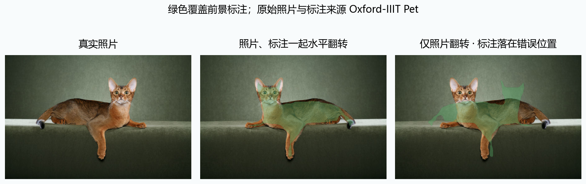
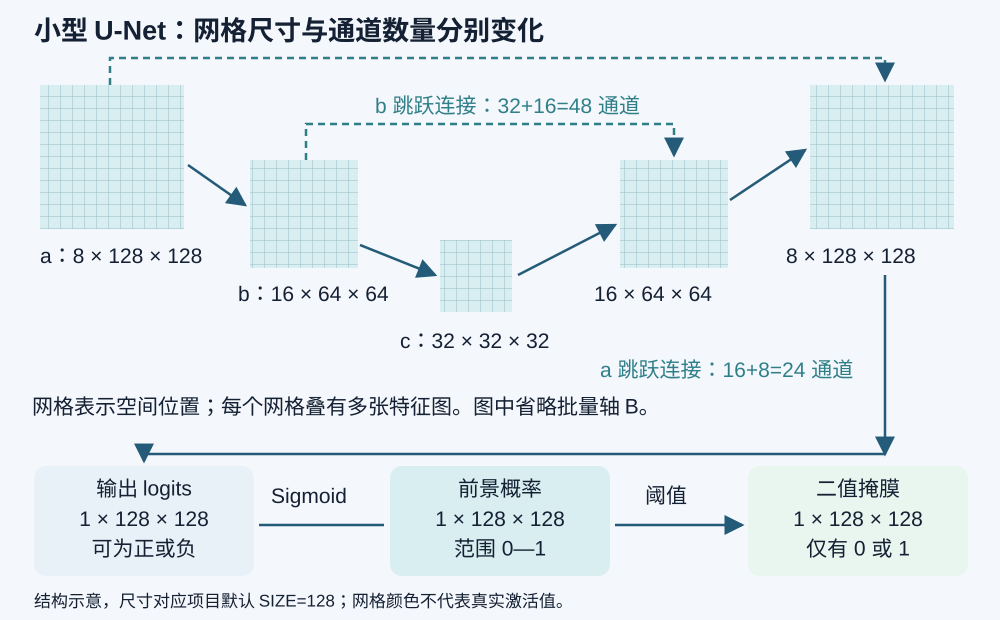
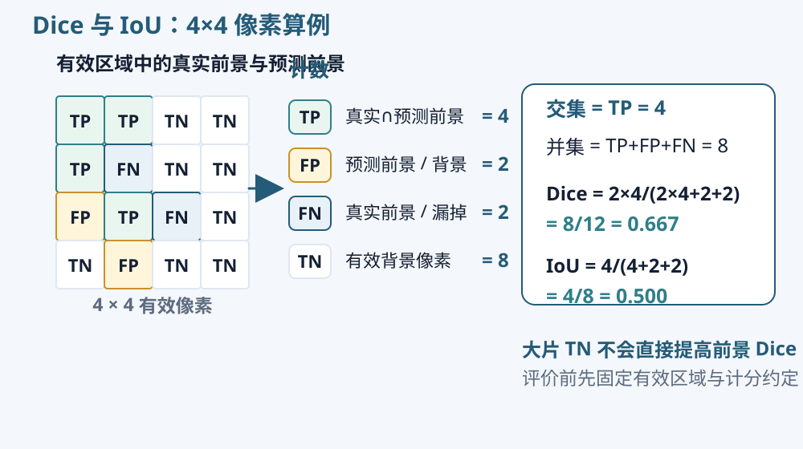

标注与像素预测
整张照片标为“猫”，仍没有说明猫占据了哪些位置。像素标注给照片中的每个位置指定类别，宠物与背景因此形成两块区域。分割模型根据这些标注学习预测区域及其边缘。
空间标注与任务类型
分类只给整张照片一个猫或狗的名字。如果我们想描出动物轮廓，就要让每个位置都有自己的标注，背景和动物会形成不同区域。 同一张照片可以具有多种标注。整图类别说明主要对象是什么，矩形框给出大致位置，像素标签进一步指出边界和区域。像素标注通常更细致，也需要更多人工工作。图像分割模型学习的是现有标注所定义的区域，理解标注规则应当早于选择网络。
语义分割给每个位置赋予类别，例如背景、猫、狗。同一类的不同个体可以使用同一类别值。如果照片里有两只狗，语义分割可以把它们都标成狗；实例分割还要区分哪一块属于第一只、哪一块属于第二只。实例编号表达对象身份，与猫狗类别编号含义不同。
本项目采用二分类语义分割：所有宠物前景归为一类，其他有效区域归为背景。多类语义分割则可以区分更多互斥类别，模型和损失需要相应改变。先写出类别表，就能知道一张标签图中的每个数字应怎样解释。
掩膜与边界待定区
看照片中的细毛边缘，动物和背景不总能划出毫无疑问的一条线。Oxford 的标注单独保留了待定边界；三种编码分别记录宠物、背景和待定边界的位置。 分割掩膜可以看作与原图同样排列的二维数组。坐标相同的两个位置分别保存颜色和类别。掩膜里的值是编码，不能当作普通灰度亮度理解。显示时可以把前景涂成黄色、背景涂成紫色，但显示颜色不等于实际存储的类别编号。

分割改用每个像素的类别标注。trainval.txt 中的 species 仍描述整张图片是猫还是狗；trimaps 文件描述动物、背景与待定边界分别在哪里。两个文件里的数字属于不同对象。
| 数据位置 | 原始值 | 本次用途 |
|---|---|---|
| 样本清单的 species | 1＝猫，2＝狗 | 上一项目映射为分类标签 0、1；本次不作像素目标 |
| trimap 中的像素 | 1＝宠物，2＝背景，3＝待定边界 | 生成前景目标：原值 1 → 1，其他位置 → 0 |
有效位置 valid | 原值不等于 3 时为 True | 损失与指标只统计这些位置 |
模型仍会为待定边界输出预测，显示图里也能看到这些位置。忽略的只是它们对损失和指标的贡献；目标数组在此存为 0，也不会被当成确定背景用于训练。
其他标签文件中的忽略编码
读取后先检查有哪些原始值，再核对宠物轮廓。不要直接把大于零的像素全部当成前景，因为原始背景编码也是正数。若在自己的文件中采用 255 表示忽略，需保存这份映射；模型的概率目标仍应是有效位置的 0 或 1，不能把 255 当作前景概率送进二元交叉熵。
同步变换与位置对应
把照片翻转后，猫换到了另一侧。标注如果仍停在原来的位置，模型就会收到相互矛盾的输入和目标。 照片和掩膜需要共同表达同一位置。缩放时可以对 RGB 照片使用双线性插值，标签图使用最近邻，以免插出不存在的类别值。随机裁剪、翻转和旋转则要共享相同空间参数，否则两张图虽然尺寸相同，动物位置却可能相反。
例如，将照片水平翻转却不翻转掩膜，左侧的猫头会移动到右侧，训练目标仍留在原位。模型会收到互相矛盾的监督。最直接的检查是把处理后的掩膜半透明叠加在照片上，观察耳朵、背部和尾巴是否仍然对应。
调整亮度等外观变换可以只作用于照片，目标位置仍由掩膜提供。裁剪如果移除了动物，可能形成没有前景的样本；补边又会增加人工区域。应说明这些位置如何标注和参与损失，不能让默认填充值悄悄改变任务含义。


像素分数与阈值
猫狗分类为整张图输出两个类别分数；本次二分类分割为每个像素输出一个“是前景”的分数。输出形状是 [B,1,H,W]，其中 1 是一个前景 logit 通道。Sigmoid 把这个分数变成 0—1 的前景概率，再用阈值形成二值掩膜。
设定“概率不低于 0.5 判为前景”以后，就能统计预测区域。把阈值提高到 0.7，预测前景通常会缩小，可能减少误分，也可能漏掉较弱的真实前景。阈值是一项评价设置，需要在验证集上确定，测试阶段保持固定。
另一种实现：两个类别通道
另一种二分类实现可以输出两个类别 logits，并使用交叉熵；多类互斥分割通常输出 [B,C,H,W]，每个位置有 C 个类别分数，目标为 [B,H,W] 的整数类别。选择哪种表示都需要同时匹配输出、目标、损失和预测规则，不能只替换最后一层通道数。
输出分辨率也会影响边界。模型在 32×32 网格上给出分数，再放大成 128×128，只是增加显示与评价的位置，并不自动获得原来未预测的细节。可以先将连续分数恢复到标签尺寸，再根据固定规则得到二值预测；若先变成二值掩膜再放大，边缘可能呈现不同形态。
保存对照图时记录这些处理。细尾巴或毛发在缩小输入时可能已经消失，这类问题需要结合原图和处理后图像分析。保持输入尺寸、输出恢复方式和评价分辨率一致，才能更清楚地观察结构或训练设置带来的差异。
交互示意
连续分数怎样变成前景区域
格子中的数是人工设定的前景分数。提高阈值后，原本边缘上的低分位置可能离开前景，中心高分位置仍会保留。
教学交互示意，数值和画面随操作实时计算。
分割网络
猫毛与背景可能颜色相近，单个像素很难说明它属于哪里。局部边缘和较大范围的头部、身体形状共同提供线索；分割网络需要在汇总这些线索的同时保留位置信息。
编码器与解码器
判断耳朵既要看局部边缘，也要看它与头部的关系。网络先缩小网格来汇总较大范围，再把信息恢复成逐位置的预测。 判断一个像素属于宠物，往往需要它周围的上下文。同样的浅色局部可能属于动物毛发，也可能属于沙发，较大范围的信息有助于区分。编码器逐步降低空间尺寸、组合局部特征，让后续计算观察更广的输入范围。
项目网络的空间尺寸依次为 128×128、64×64、32×32，特征通道数依次为 8、16、32。空间位置减少，通道保存不同权重组合出的响应。增加通道改变模型的内部表示容量，没有增加新的图像测量。
分割需要恢复到与标签对应的空间网格，因此还要有解码器。它逐步提高空间尺寸，并结合卷积计算新的特征。上采样可以使用插值再卷积，也可以采用转置卷积等可学习方法。提高尺寸只提供更多输出位置，已经在下采样中丢失的细节仍需要其他信息支持。

U-Net 与跳跃连接
本项目的小型 U-Net 在 128×128 输入上保存两个尺度的特征：a 为 [B,8,128,128]，b 为 [B,16,64,64]，最深处 c 为 [B,32,32,32]。空间网格缩小，通道数量增加；通道保存的是计算特征，已不再是 RGB。
解码时把 c 放大到 64×64，与保存的 b 沿通道轴拼接，得到 48 个通道，再卷积为 16 个通道。下一步放大到 128×128，与 a 的 8 个通道拼接，再计算输出。跳跃连接传递的是编码器的特征，提供较细的位置信息；放大本身只重新安排已有数值。
假设解码特征为 32 个通道、64×64，编码器相应位置的特征为 16 个通道、64×64。沿通道方向拼接后得到 48 个通道、64×64，再通过卷积处理。若要使用逐元素相加，形状条件又不同；拼接与相加不能仅因都叫“融合”就混用。
代码已经提供上述小型 U-Net。修改网络时若出现尺寸不匹配，可对照 a、b、c 的形状，检查上采样后是否与对应编码特征具有相同行列数。初次项目保留这份结构，两种方案只改变配对翻转概率。
分割评价
预测少画一只耳朵与多画一块背景，对应漏分和误分。将预测与标注逐位置对照，可以数出这两类错误；Dice 和 IoU 用区域重合程度概括分割结果。
交集、并集与错误像素
预测轮廓与标注重叠得很多时，我们直觉上会认为分割接近正确。把两块区域里的像素数数清楚，就能把这个观察写成 Dice 和 IoU。 在有效像素范围内，把真实前景记为集合 A、预测前景记为集合 B。交集包含两者都认为是前景的位置，并集包含至少一方认为是前景的位置。真实前景被漏掉是漏分，背景被多画成前景是误分。它们分别对应假阴性和假阳性。
设真实前景有 6 个像素，预测前景有 5 个，其中 4 个位置重合。那么正确前景有 4 个，漏分有 2 个，误分有 1 个，并集是 6+5−4=7 个。逐项计数以后，再看指标公式就能知道误差影响了哪一部分。

IoU 等于交集除以并集，本例为 4÷7，约 0.571。Dice 等于两倍交集除以两个前景集合大小之和，本例为 8÷11，约 0.727。二者都关注前景重叠，同一组像素上的 Dice 与 IoU 可以相互换算，但平均后的结果需要遵守各自的汇总方式。
交互示意
一块漏分或误分怎样改变指标
左边是固定标注，右边先与它完全一致。点击右边一个格子改变预测，再看交集、并集、Dice 和 IoU 怎样一起变化。
标注 · 固定
预测 · 点击切换 0 / 1
教学交互示意，数值和画面随操作实时计算。
指标与背景比例
若一张照片的大多数位置都是背景，模型把所有位置都说成背景也可能有很高的像素准确率。动物本身有没有被找出来，需要单独查看前景区域。 逐像素准确率统计所有有效位置判对的比例，大片背景也计入正确数。假设一张图有 100 个有效像素，其中只有 5 个前景，全部预测为背景仍能得到 95% 的像素准确率，但宠物完全没有被分出。前景 Dice 和 IoU 会清楚显示这一问题。
对于前面的 6、5、4 例子，如果总共 16 个有效像素，前景并集外还有 9 个位置，真实与预测都属于背景。像素准确率为 (4+9)÷16=81.25%，而 Dice 约为 72.7%。这些指标描述不同范围，不能把一个名称替换为另一个。
提高指标时还要观察错误位置。漏掉一整只小耳朵与沿大躯干边缘出现少量偏移，可能带来相近像素误差，却影响不同结构。样例图和局部分析能够补充平均分数，并帮助选择下一项合理实验。
逐图平均与合并统计
本项目给每张测试图计算一次 Dice 和 IoU，再对这些数取平均；每张图在平均中权重相同。逐图结果同时保存到 metrics.csv，能够找到两种方案在哪些样本上不同。
用两张图手算：第一张的真实和预测前景各有 2 个，只重合 1 个，Dice 为 0.5、IoU 为 1÷3；第二张两者各有 18 个，并且完全重合，Dice 和 IoU 都为 1。逐图平均得到 Dice=0.75、IoU 约为 0.667。
合并像素统计与逐图平均的区别
若合并统计，总交集为 19，真实与预测前景各为 20，因此 Dice=38÷40=0.95。两张图的并集总和为 3+18=21，IoU=19÷21，约为 0.905。较大的完整区域主导了汇总结果。许多工具中的 macro 还可能指类别平均，因此仅写一个术语不够，需说明平均的是图像还是类别。
空前景和完全没有有效像素时怎样统计
空区域与忽略区
有的裁剪窗口没有动物，有的区域处于待定边界。计算分数前，我们需要先确定这些位置是否有可评价的前景，分母是否仍有意义。 如果真实与预测都没有前景，Dice 和 IoU 的直接公式会出现零分母。本课程练习在存在有效像素的前提下，约定这种情况计为 1，因为两者对“无前景”的判断一致。也可以采用其他明确约定，但比较的各方案需要一致，报告需说明空区域数量。
若没有任何有效像素，当前样本无法提供评价，应标记为不可计算并保留有效样本数。它与有有效背景、但没有前景的情况不同。不能为了让程序输出一个有限数字，就把所有这类情况直接写成 0 或 1。
忽略像素要同时从真实和预测集合中排除。只在损失中忽略，却在评价中计入，会改变两者针对的对象。在练习中只修改忽略区内的预测，指标应保持不变；这是核对实现的一项局部检查。
损失与独立实践
评价指标描述预测区域与标注的重合程度。训练损失还需要能够计算梯度，将每个有效位置的预测差异传给模型参数；边界待定区不参与这项计算。
像素损失与类别不平衡
训练时使用有效位置的像素二元交叉熵，加上 soft Dice 损失。像素损失比较每个位置的分数与 0/1 目标；soft Dice 直接使用连续概率，衡量整片前景的重合。评价时先用阈值把概率变成 0/1，再计算 Dice 指标。
| 教学算例：三个有效像素 | 值或计算 | 含义 |
|---|---|---|
| 真实前景 | [1,1,0] | 前两个位置应为宠物 |
| 预测概率 | [0.8,0.4,0.2] | 保留连续值用于训练 |
| soft Dice | 2×1.2 ÷ (1.4+2) ≈ 0.706 | soft Dice 损失约为 1−0.706=0.294 |
| 阈值 0.5 后的预测 | [1,0,0] | Dice 指标为 2×1 ÷ (1+2) ≈ 0.667 |
同一个预测产生不同数值，是因为训练和评价使用的对象不同。这个简短算例省略了代码中用于避免零除的小常数。
真实前景占比很小时，大量背景位置可能主导普通平均损失。可以考虑调整采样、前景权重或损失设计。提高前景权重会改变优化时对漏分和误分的相对重视程度，也可能让预测区域变大，不能只根据训练损失就判断效果改善。
Dice 损失通常直接使用连续概率计算柔性的重叠量，再构成需要最小化的目标。评价时使用阈值后的二值集合，两者并不完全相同。若先用硬阈值生成 0/1 再当作普通可微损失，阈值操作会阻断所需的连续变化关系。实现时还要说明平滑项、有效区域和汇总范围。
组合两种损失时，系数决定它们的相对作用。初次项目先选一项能够解释的设置，确认小批量计算正确，再将权重或损失作为单独因素比较，保持数据划分与评价规则一致。
结果阅读与代码实践项目准备
同一个 Dice 分数可能来自不同错误：漏掉耳朵，或多圈进一块背景。对照照片、标注和预测的并排图，我们能看清具体改变了哪些位置。 把原图、真实掩膜和预测掩膜并排显示，保持同样的尺寸、方向和类别颜色。选取一个漏分或误分位置，在原图中标明，再显示局部放大。对所有实验采用相同样例，另行记录困难样例的选取方式。
分割代码实践项目提供照片、掩膜和训练流程；需要补全标签编码、网络输出和损失处理。训练后保存几张固定样本的原图、标注与预测，并计算逐图 Dice 和 IoU。
下一章“实验与短报告”会继续讲一次单变量比较和结果整理。代码实践项目使用 Oxford-IIIT Pet，保留官方测试部分，从 trainval 建立训练与验证集；完成两种设置的逐图 Dice、IoU 和固定样例比较，再提交可运行代码、配置与划分、权重、对照图，以及 Word/PDF 简短报告。报告中的解释以实际结果和具体位置为依据。
Word 报告准备
分割报告使用同一批图像比较两个方案。保存原图、标注、预测和逐图指标；这些文件直接用于结果表和对照图。下一章的 Word 教程给出样式、题注、交叉引用、具体任务及完整参考报告。